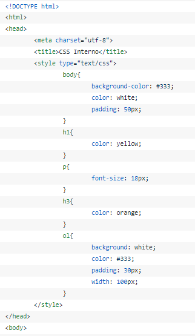
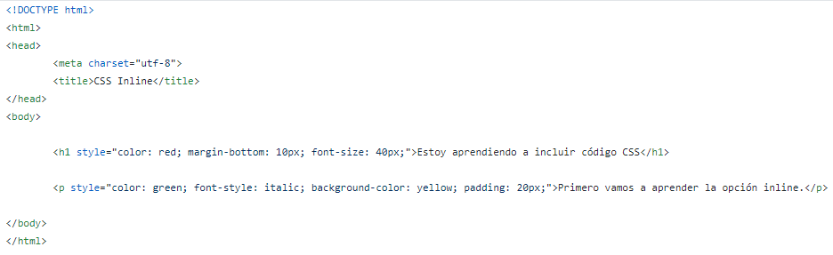

A cualquier etiqueta HTML puedes añadirle la propiedad "style" y dentro de ella añadir tantos estilos como desees separados por punto y coma, por ejemplo
Conocer los conceptos y etiquetado de CCS3, que es la última evolución del lenguaje de las Hojas de Estilo en Cascada, que nos sirve para definir el aspecto de las páginas web de una manera más avanzada. Una de las formas habituales que existen para incluir estilos CSS en nuestra página es la de añadirlos directamente en el documento HTML, a través de una etiqueta "style" que contendrá el código CSS 
Otra forma de aplicar estilos en un documento HTML es hacerlo directamente, a través del atributo style de la propia etiqueta donde queramos aplicar el estilo, los estilos se asocian a la etiqueta en cuestión y no pueden reutilizarse 